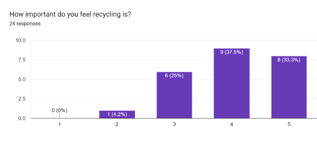
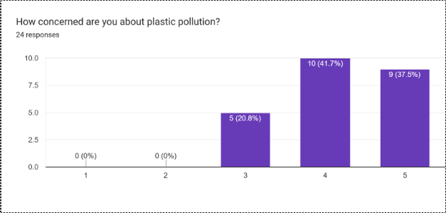
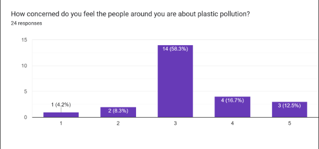
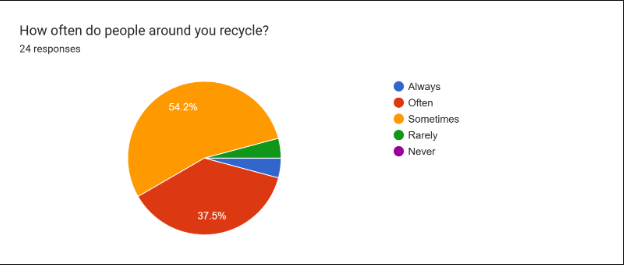
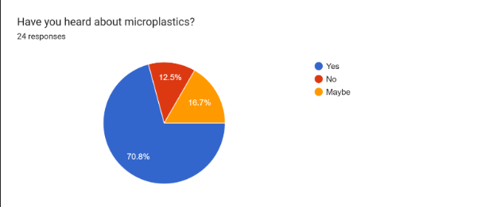

I choose to do a website as my audience for this website is essentially people from whatcom community college or anyone who would be interested in doing some research or knowing more about this topic. That is why I added the statistics as I did and the rest was kept short so it could be readable and understandable. The background color was choosen due to it being pleasent on the eyes and also making the text pop more. I made the text a bit bold so it was easier to read and I made sure to clump it more togther so as not to have too spread out text. I kept only the results that I needed for this page on this page along with a link for anyone within this network to access my full report. I choose this method due to the easy spreadability of it and the ability to allow for easier link acsess and more customizability though some of that was lost on me as I choose to do this only through code. For the most part people would be finding this through a link to the website I would put out and I feel this website works to push it out to them though the effectiveness of keeping them if they're not interested is debateable.
Plastic pollution is becoming a bigger issue every year as the number of plastics that are made
increases, and that goes into our environment. The problem is that plastics can degrade over time
making microplastics or macroplastics which can cause a host of different problems for our land, water,
animals and food. This is bad due to the increasing amount of plastic we make each year from 2 million metric tons
in 1950 to 380 million metric tons in 2015 (Gross & Judith, 2021, p.2). That along with the lack of intrest in the issue
until recently is really making it difficult to face the issue head on.
This issue effects our agriculture as the plastic can get into the land through mulch or sewer sludge (Sa’adu & Farsang,2021, p. 9) and this can lead to long term issues with the crops as when the plastic break down they can release heavy metals which can effect the soil and the crops being grown from it and if that gets into an animal that can also be dangerous for them as well. That danger can also apply to us and that is critical as we need to be more cautious with what we're putting out into the environment and how that can effect us down the line. If we don't look for ways to stop this issue it could cause irreparable damages to all manors of our lives.
For this project I conducted a student survey the student survey was put out to Whatcom community college students which were primarily about their feelings on plastic pollution and recylcing and whether they see plastic pollution or not. My questions ranged from 1-5 scales to yes/no/maybe answers or multiple choice and some never to always questions. My research was mainly focused on feelings about plastic pollution due to some research that I have seen that showed a very lax behaviour of governments to plastic pollution considering it to be a harmless waste solid (E. Schmaltz et al, 2020, p. 2) and my concerns lied in seeing whether people were worried about what plastic can really do.
Survey Result #1

Survey Result #2

Survey Result #3

Survey Result #4

Survey Result #5

This research is showing that people aren't really sure of how much other people are worried about this issue. This can cause people
to not speak up as much as they might believe that no-one else is really interested or worried about this issue. If it is the case where
people are genuinely disinterested in this I believe that could be because of a lack of understanding of the full issue as in #3 vs. #4
there is stark increase in how much people might recycle vs. the amount they care about the issue which could mean that people believe that
plastic pollution is not really an issue as long as they recycle somewhat often or that it is directly related to our recycling now and that's
not exactly the case. As in the past we have seen that plastic was considered harmless (E. Schmaltz et al, 2020, p. 2) which could influence people
to believing the government they're under and the attitude towards recycling currently I feel doesn't reflect the actual numbers because
we are only recylcing 9% of the amount of plastic we get per year (Gross & Judith, 2021, p.1). If more people understood the scale of what is happening
I feel there could be a bigger push to make us go further towards 50% recycling in the future.
In the future I would like to see what the veiws are
about plastic pollution and recycling on a bigger scale and how much people know. I'd also like to see how those two interplay as if we can see how people
veiw plastic pollution and how much they know we can deduce the right area to increase peoples perception of the problem and work to fix it faster. Another
area that could take a good look is into some policies that we could adopt to make the issue better and what the upside and downsides of those polcies may be.
If we can find out how to raise awareness we can push to have more action done across the nation and not leave the issue for peolpe down the line.
Arturo, I., Corcoran, P. (2022). Categorization of plastic debris on sixty-six beaches of the Laurentian Great Lakes, North America. Environmental research letters, 17(4), 1-15.
Schmaltz, E., Melvin, E., Diana, Z., Gunady, E., Rittschof, D., Somarelli, J., Virdin, J., & Dunphy-Daly, M. (2020). Plastic pollution solutions: emerging technologies to prevent and collect marine plastic pollution Plastic pollution solutions: emerging technologies to prevent and collect marine plastic pollution. Environment International, 144, 106067-.
Gross, L., Judith, E. (2021). Confronting plastic pollution to protect environmental and public health. PLos biology, 19(3), 1-2.
Lau, W. W. Y., Shiran, Y., Bailey, R. M., Cook, E., Stuchtey, M. R., Koskella, J., Velis, C. A., Godfrey, L., Boucher, J., Murphy, M. B., Thompson, R. C., Jankowska, E., Castillo Castillo, A., Pilditch, T. D., Dixon, B., Koerselman, L., Kosior, E., Favoino, E., Gutberlet, J., … Palardy, J. E. (2020). Evaluating scenarios toward zero plastic pollution. Science (American Association for the Advancement of Science), 369(6510), 1455–1461. https://doi.org/10.1126/science.aba9475
Sa’adu, I., Farsang, A. (2023). Plastic contamination in agricultural soils: a review. Environmental Sciences Europe, 35(1), 1-10.